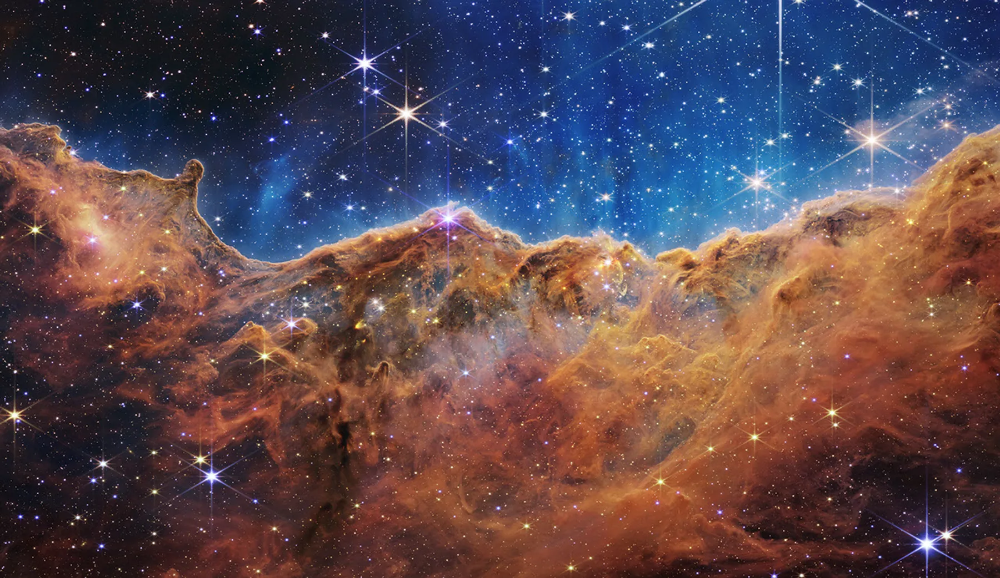
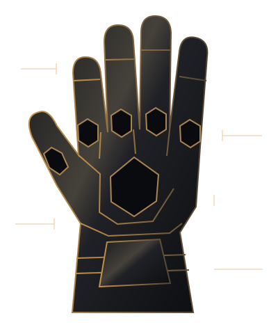

Iniciando sistema, verificando líneas temporales y analizando anomalías.
SEÑAL 616 / ∞
+ ARCHIVO CLASIFICADO: NUESTRO INFINITO
La anomalía de nuestro infinito.
Se ha detectado una conexión que desafía todas las probabilidades.
UNA CONEXIÓN. TODAS LAS REALIDADES.
SOLO PARA TI, EN CUALQUIER UNIVERSO.01 / 09
01 — VERIFICACIÓN DE IDENTIDAD
Estábamos esperándote.
EXPEDIENTE 616-INFINITO
TVA ∕AUTORIDAD DE VARIACIÓN TEMPORAL
ACCESO AUTORIZADO
AGENTE AUTORIZADA
Mi niña hermosa
CLASIFICACIÓN
Anomalía extraordinaria
ESTADO
Línea temporal protegida
RIESGO DETECTADO
Enamoramiento infinito
616 / AMOR / ∞
Después de examinar incontables realidades, hemos encontrado una historia que merece ser estudiada.

02 — UNA EXCEPCIÓN EN EL UNIVERSO
La anomalía más bonita.
EVIDENCIA 001COINCIDENCIA: INFINITAEN TODAS LAS LÍNEAS, UNA MISMA ELECCIÓN.
03 — EVIDENCIAS DE NUESTRA HISTORIA
Momentos que se quedan.
No todo lo importante cabe en un expediente. Pero hay recuerdos que merecen uno.
LÍNEA TEMPORAL PERSONAL06 ARCHIVOS
04 — SEIS FORMAS DE DECIRTE TE AMO
Nuestro propio infinito.
Seis gemas. Seis razones para elegirte. Un universo entero en lo que sentimos.
0 de 6 expedientes explorados
El archivo final espera a que conozcas las seis gemas.
ADVERTENCIA TVA / CONEXIÓN EXTRAORDINARIA
ANALIZANDO RESULTADOS
MI UNIVERSO FAVORITO
Millones de posibilidades. Infinitos caminos. Incontables versiones de nuestra historia.
Y AUN ASÍ...
Mi elección favorita siempre serías tú.
06 — DESCLASIFICADO. SOLO PARA TI.
El archivo que ningún universo podría borrar.
DE: TU ESPOSITO
∞PROTEGIDO POR SIEMPRE
EL LUGAR AL QUE SIEMPRE QUIERO VOLVER.
✧
Este universo ya es nuestro.
TRANSMISIÓN ENTRANTE
La misión todavía no ha terminado.
Seis Gemas del Infinito han sido localizadas fuera del sistema digital.
ARTEFACTO / 006

UBICACIÓN: TU PRÓXIMA AVENTURA
Para completar el Proyecto Infinito, la agente autorizada deberá recuperar las seis gemas. Cada una se encuentra protegida por una sorpresa preparada especialmente para ella.
MISIÓN FÍSICA / SIN FECHA LÍMITE
Por esta noche, solo disfruta lo nuestro. Las sorpresitas llegarán en su momento.
MARVEL STUDIOS PRESENTA...
∞
Las aventuras de mi niña hermosa y su esposito.
PRÓXIMAMENTE: MUCHOS MÁS CAPÍTULOS JUNTITOS
“Nada es para siempre, solo nosotros.”
♡
Una historia hecha para ti. Proyecto personal inspirado en ficción, sin afiliación con Marvel Studios.